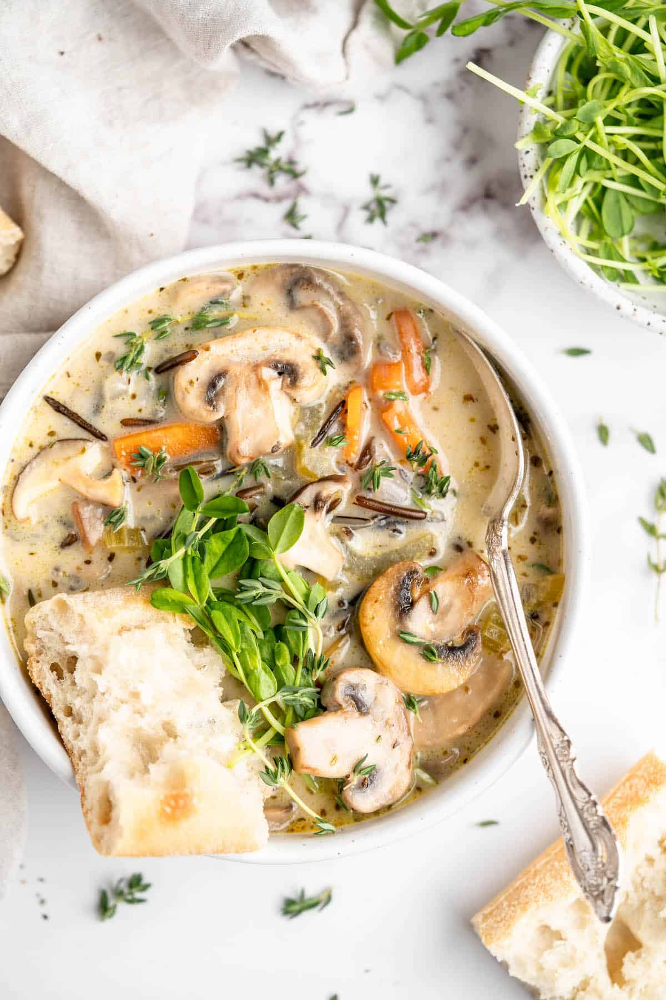

Creamy Mushroom Wild Rice Soup
This vegan Mushroom Wild Rice Soup is creamy, satisfying, and made in a single pot, so it’s perfect for a weeknight dinner!

Ingredients:
- 2 tablespoons coconut or olive oil or vegan butter
- 2 medium sized carrots, finely diced
- 3 stalks celery, chopped and bottoms removed
- 1 large red onion, finely diced
- 2 cloves Garlic, minched
- 8 ounces baby Bella or white button mushrooms, sliced
- 2 tablespoons flour
- 1/2 cup Wild rice
- 4 ½ to 5 cups Vegetable broth
- 1 teaspoon dried oregano
- 1 tablespoons fresh Thyme
- sea salt and black pepper
- 1 cup coconut milk or almond milk
- crusty bread, to serve with
Steps:
- In a large pot over medium high heat, add the oil or vegan butter.
- Add in the carrots, celery, onions, garlic and mushrooms and sauté for 8 minutes.
- Sprinkle the flour over, and stir to combine. Add in the wild rice, vegetable broth, dried oregano and fresh thyme. Season generously with sea salt and ground black pepper. Bring everything to a boil, then reduce to a simmer.
- Simmer for about 50 to 60 minutes, stirring every 10 minutes or so, until the wild rice is completely fluffed up and cooked through. Stir in the coconut milk or almond milk, and cook for another 2 to 3 minutes to heat through. Taste and season with sea salt and black pepper again.
- Remove from stove and serve alongside some bread. Enjoy!